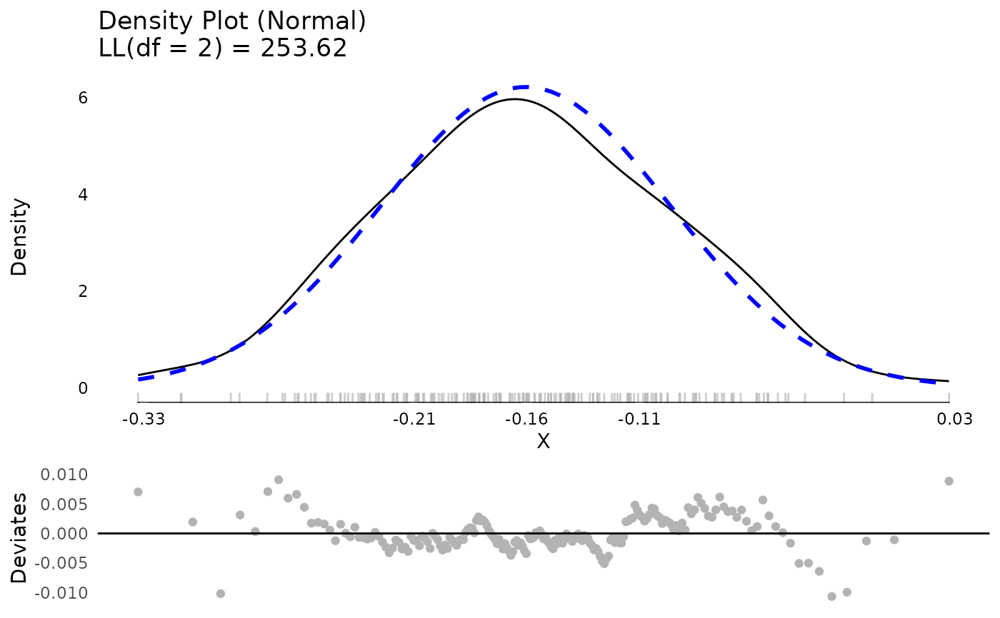
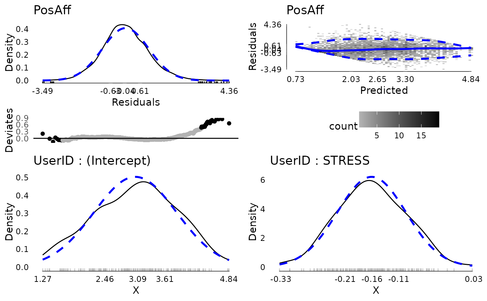
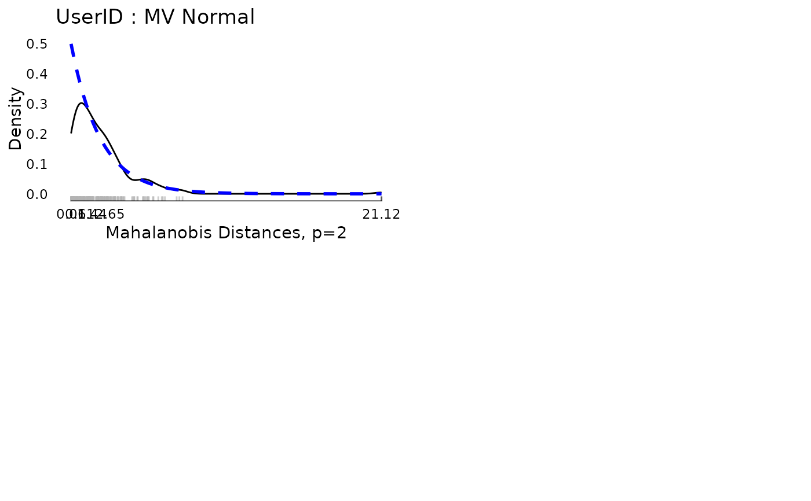
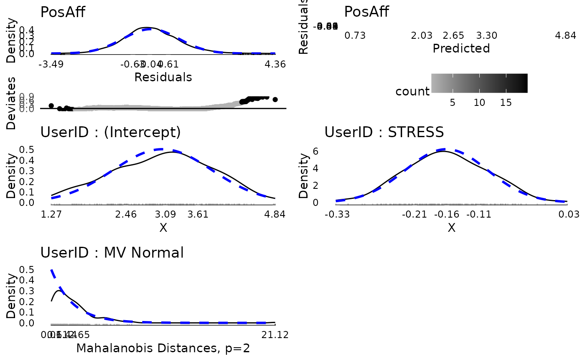

This function creates a number of diagnostic plots from lmer models.
Usage
# S3 method for class 'modelDiagnostics.merMod'
plot(x, y, plot = TRUE, ask = TRUE, ncol = 1, nrow = 1, ...)Arguments
- x
A fitted model object from
lmer().- y
Included to match the generic. Not used.
- plot
A logical value whether or not to plot the results or simply return the graaphical objects.
- ask
A logical whether to ask before changing plots. Only applies to interactive environments.
- ncol
The number of columns to use for plots. Defaults to 1.
- nrow
The number of rows to use for plots. Defaults to 1.
- ...
Included to match the generic. Not used.
Value
a list including plots of the residuals, residuals versus fitted values, and one list for plots of all random effects
Examples
library(JWileymisc)
sleep[1,1] <- NA
m <- lme4::lmer(extra ~ group + (1 | ID), data = sleep)
md <- modelDiagnostics(m, ev.perc = .1)
md$extremeValues
#> extra ID Index EffectType
#> <num> <fctr> <int> <char>
#> 1: 0.0 9 9 Residuals
#> 2: -0.1 5 15 Residuals
#> 3: 4.6 9 19 Residuals
#> 4: 3.4 6 6 Random Effect ID : (Intercept)
#> 5: 3.7 7 7 Random Effect ID : (Intercept)
#> 6: 4.4 6 16 Random Effect ID : (Intercept)
#> 7: 5.5 7 17 Random Effect ID : (Intercept)
data(aces_daily, package = "JWileymisc")
m <- lme4::lmer(PosAff ~ STRESS + (1 + STRESS | UserID), data = aces_daily)
md <- modelDiagnostics(m, ev.perc = .001)
md$extremeValues
#> PosAff UserID Index EffectType
#> <num> <int> <int> <char>
#> 1: 2.018930 19 643 Residuals
#> 2: 4.647537 22 736 Residuals
#> 3: 4.379594 22 737 Residuals
#> 4: 4.285682 51 1759 Residuals
#> 5: 5.000000 52 1819 Residuals
#> 6: 4.593965 53 1838 Residuals
#> 7: 5.000000 53 1841 Residuals
#> 8: 3.679191 56 1934 Residuals
#> 9: 3.499317 69 2371 Residuals
#> 10: 1.333848 75 2580 Residuals
#> 11: 4.200560 78 2688 Residuals
#> 12: 1.000000 81 2805 Residuals
#> 13: 1.723817 83 2884 Residuals
#> 14: 4.702814 88 3018 Residuals
#> 15: 4.982255 97 3328 Residuals
#> 16: 4.851732 97 3329 Residuals
#> 17: 4.697991 97 3330 Residuals
#> 18: 5.000000 107 3675 Residuals
#> 19: 1.173068 113 3902 Residuals
#> 20: 1.000000 115 3954 Residuals
#> 21: 1.041260 119 4100 Residuals
#> 22: 4.713139 127 4357 Residuals
#> 23: 4.054051 141 4834 Residuals
#> 24: 3.975565 141 4835 Residuals
#> 25: 3.989508 141 4836 Residuals
#> 26: 4.278470 141 4844 Residuals
#> 27: 4.447151 147 5079 Residuals
#> 28: 1.079654 155 5341 Residuals
#> 29: 5.000000 155 5358 Residuals
#> 30: 4.660743 160 5520 Residuals
#> 31: 1.342503 163 5626 Residuals
#> 32: 4.706810 173 5944 Residuals
#> 33: 4.194950 180 6212 Residuals
#> 34: 4.258350 191 6568 Residuals
#> 35: 5.000000 191 6569 Residuals
#> 36: 4.701488 123 4219 Multivariate Random Effect UserID
#> 37: 3.942647 123 4220 Multivariate Random Effect UserID
#> 38: 3.841534 123 4221 Multivariate Random Effect UserID
#> 39: 3.072598 123 4222 Multivariate Random Effect UserID
#> 40: 4.165724 123 4223 Multivariate Random Effect UserID
#> 41: 2.573955 123 4224 Multivariate Random Effect UserID
#> 42: 1.871370 123 4225 Multivariate Random Effect UserID
#> 43: 4.497994 123 4226 Multivariate Random Effect UserID
#> 44: 2.207134 123 4227 Multivariate Random Effect UserID
#> 45: 4.370643 123 4228 Multivariate Random Effect UserID
#> 46: 1.713198 123 4229 Multivariate Random Effect UserID
#> 47: 3.786528 123 4230 Multivariate Random Effect UserID
#> 48: 4.702243 123 4231 Multivariate Random Effect UserID
#> 49: 2.262491 123 4232 Multivariate Random Effect UserID
#> 50: 5.000000 123 4234 Multivariate Random Effect UserID
#> 51: 2.392975 123 4235 Multivariate Random Effect UserID
#> 52: 3.588502 123 4236 Multivariate Random Effect UserID
#> 53: 3.446311 123 4237 Multivariate Random Effect UserID
#> 54: 2.832955 123 4238 Multivariate Random Effect UserID
#> 55: 3.671293 123 4239 Multivariate Random Effect UserID
#> 56: 4.893790 123 4240 Multivariate Random Effect UserID
#> 57: 4.633870 123 4242 Multivariate Random Effect UserID
#> PosAff UserID Index EffectType
plot(md$modelDiagnostics[[2]][[2]])

plot(md, ncol = 2, nrow = 2)


plot(md, ncol = 2, nrow = 3)

rm(m, md, sleep)